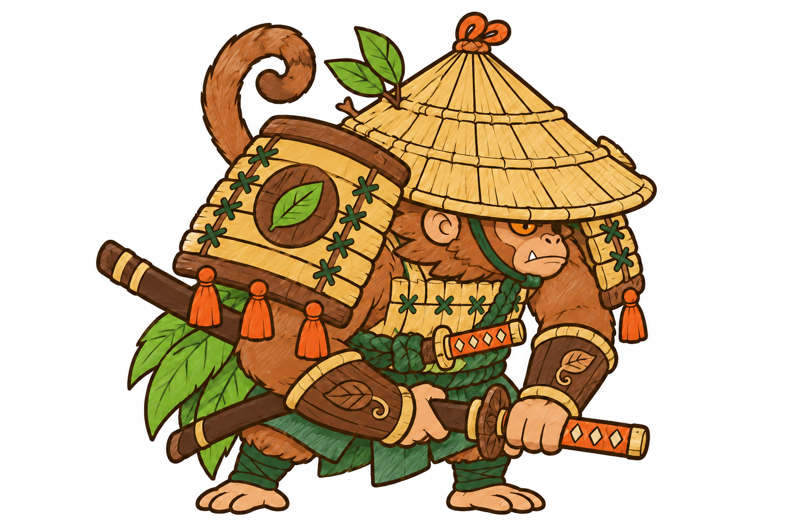
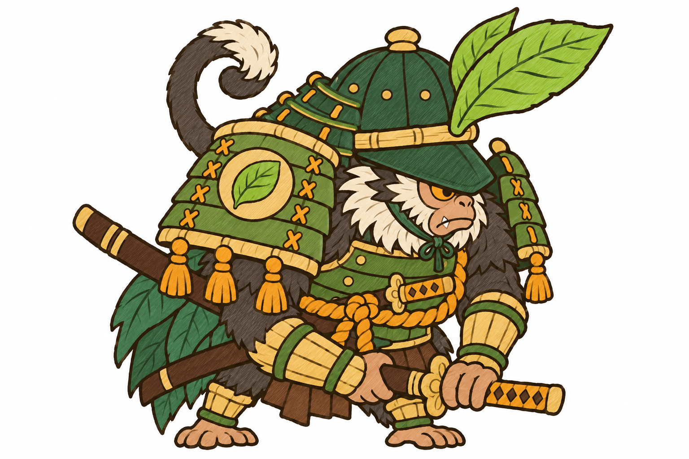
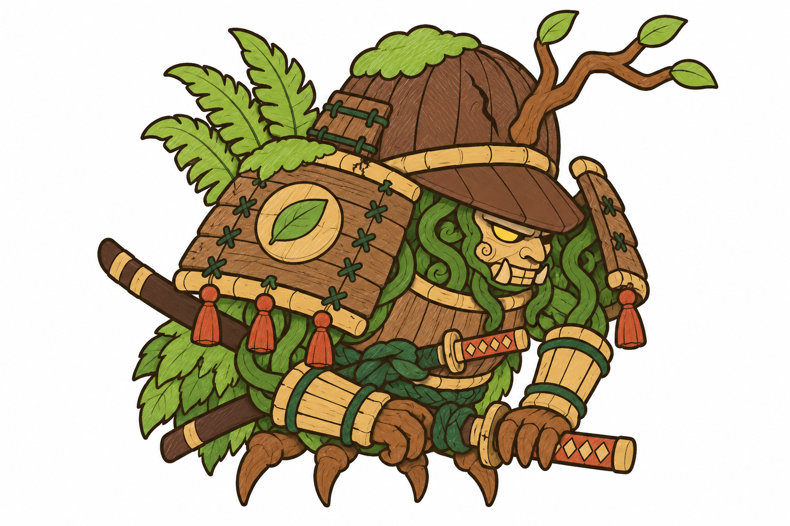

Cùng dáng gù thế rút kiếm, tấm vai to, hai kiếm còn trong vỏ như con gốc; loài, mũ, màu là đề xuất.

A · khỉ ronin nón láLông nâu hung, nón lá rộng vành, giáp nan tre, áo tơi lá, tua cam, đuôi cuộn; hai chân.
B · voọc tướng quânLông than, ria trắng, mũ kabuto sơn lục mào lá to, giáp lục viền tre, dây hổ phách; hai chân.
C · bộ giáp vô chủKhông phải sinh vật: giáp gỗ cũ do dây leo điều khiển, mặt nạ gỗ, mào nhánh cây, bốn chân rễ (giữ nguyên bốn chân của rig).